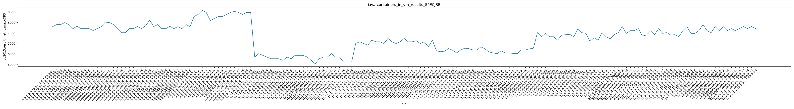
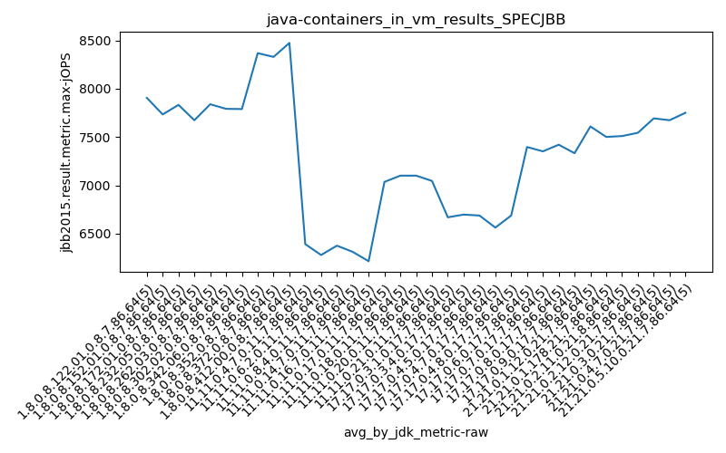
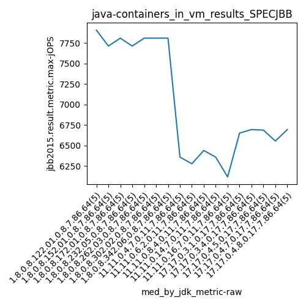
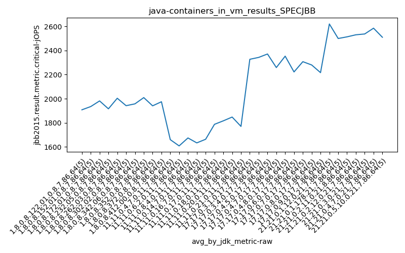
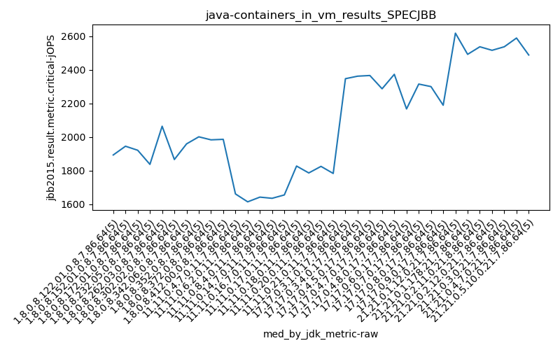
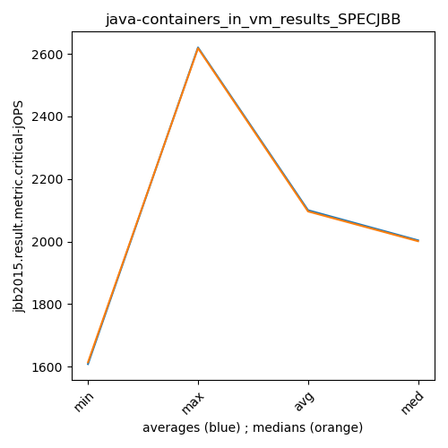

java- SPECJBB
Context at bottom
/home/jvanek/git/benchmarks-in-nested-virtualisation-toolchain/final_results/containers_in_vm_results/containers_in_vm_results_JMH
java-
SPECJBB
/home/jvanek/git/benchmarks-in-nested-virtualisation-toolchain/final_results/containers_in_vm_results/containers_in_vm_results_J2DBENCH
java-
SPECJBB
/home/jvanek/git/benchmarks-in-nested-virtualisation-toolchain/final_results/containers_in_vm_results/containers_in_vm_results_RADARGUNs3
java-
SPECJBB
/home/jvanek/git/benchmarks-in-nested-virtualisation-toolchain/final_results/containers_in_vm_results/containers_in_vm_results_SPECJBB
java-
SPECJBB
containers_in_vm_results_SPECJBB
- containers_in_vm_results_SPECJBB - max-jops
- containers_in_vm_results_SPECJBB - critical jops
containers_in_vm_results_SPECJBB - max-jops
Expected number of java- JDKs: 37
1st avgmed_alljdks_metric:
/home/jvanek/git/benchmarks-in-nested-virtualisation-toolchain/final_results/result_processing.py /home/jvanek/git/benchmarks-in-nested-virtualisation-toolchain/final_results/containers_in_vm_results/containers_in_vm_results_SPECJBB jbb2015.result.metric.max-jOPS False
values: [7808, 7905, 7905, 8001, 7905, 7712, 7820, 7712, 7712, 7712, 7622, 7712, 7808, 8018, 8001, 7905, 7712, 7519, 7519, 7712, 7712, 7808, 7712, 7845, 8117, 7808, 7905, 7712, 7712, 7820, 7712, 7808, 7712, 7905, 7808, 8290, 8387, 8580, 8483, 8098, 8194, 8290, 8290, 8387, 8483, 8531, 8483, 8387, 8483, 8483, 6359, 6520, 6440, 6359, 6279, 6279, 6279, 6198, 6359, 6279, 6440, 6440, 6440, 6359, 6198, 6037, 6279, 6359, 6359, 6520, 6359, 6359, 6118, 6118, 6118, 7003, 7084, 7003, 6923, 7164, 7084, 7084, 7003, 7245, 7084, 7003, 7084, 7245, 7084, 7084, 7134, 7003, 7084, 6842, 7164, 6652, 6613, 6637, 6762, 6681, 6555, 6695, 6778, 6762, 6695, 6688, 6844, 6748, 6601, 6555, 6520, 6652, 6555, 6555, 6530, 6520, 6695, 6695, 6748, 6778, 7519, 7326, 7486, 7326, 7325, 7164, 7406, 7423, 7439, 7325, 7712, 7519, 7486, 7109, 7274, 7164, 7519, 7325, 7230, 7423, 7519, 7808, 7486, 7616, 7616, 7712, 7357, 7406, 7605, 7423, 7712, 7486, 7522, 7406, 7423, 7326, 7616, 7808, 7486, 7482, 7616, 7905, 7616, 7519, 7808, 7616, 7808, 7616, 7712, 7616, 7712, 7808, 7712, 7808, 7712]

Expected number of iterations: 5
final number of values: 175 out of 185
Pass rate: 94.6%
values: (6037, 8580, 7304.777142857143, 7423)

** accuracy from all jdks and runs
more is better
MIN: 6037
MAX: 8580
AVG: 7304.777142857143
MED: 7423
Relative differences 1:
MIN-MAX: 30.0 %
MIN-AVG: 17.0 %
MIN-MED: 19.0 %
MAX-MIN: -42.0 %
MAX-AVG: -17.0 %
MAX-MED: -16.0 %
AVG-MED: 2.0 %
stored to java-.properties. sort | uniq that!
2nd avgmed_by_jdk_metric:
values: [7904.8, 7733.6, 7832.2, 7673.4, 7838.8, 7791.4, 7789.0, 8367.6, 8328.8, 8473.4, 6391.4, 6278.8, 6375.4, 6310.8, 6214.4, 7035.4, 7100.0, 7100.0, 7045.4, 6669.0, 6697.0, 6687.2, 6562.4, 6687.2, 7396.4, 7351.4, 7420.0, 7332.2, 7609.0, 7500.6, 7509.8, 7543.6, 7692.8, 7673.6, 7750.4]

values: [7905, 7712, 7808, 7712, 7808, 7808, 7808, 8387, 8290, 8483, 6359, 6279, 6440, 6359, 6118, 7003, 7084, 7084, 7084, 6652, 6695, 6688, 6555, 6695, 7326, 7406, 7486, 7325, 7616, 7423, 7486, 7486, 7616, 7616, 7712]

values: (6214.4, 8473.4, 7304.777142857143, 7420.0)
values: (6118, 8483, 7294.685714285714, 7423)

** accuracy from all jdks where runs were avged
more is better
MIN: 6214.4
MAX: 8473.4
AVG: 7304.777142857143
MED: 7420.0
Relative differences 1:
MIN-MAX: 27.0 %
MIN-AVG: 15.0 %
MIN-MED: 16.0 %
MAX-MIN: -36.0 %
MAX-AVG: -16.0 %
MAX-MED: -14.0 %
AVG-MED: 2.0 %
stored to java-.properties. sort | uniq that!
** accuracy from all jdks where runs were medianed
more is better
MIN: 6118
MAX: 8483
AVG: 7294.685714285714
MED: 7423
Relative differences 1:
MIN-MAX: 28.0 %
MIN-AVG: 16.0 %
MIN-MED: 18.0 %
MAX-MIN: -39.0 %
MAX-AVG: -16.0 %
MAX-MED: -14.0 %
AVG-MED: 2.0 %
stored to java-.properties. sort | uniq that!
containers_in_vm_results_SPECJBB - critical jops
Expected number of java- JDKs: 37
1st avgmed_alljdks_metric:
/home/jvanek/git/benchmarks-in-nested-virtualisation-toolchain/final_results/result_processing.py /home/jvanek/git/benchmarks-in-nested-virtualisation-toolchain/final_results/containers_in_vm_results/containers_in_vm_results_SPECJBB jbb2015.result.metric.critical-jOPS False
values: [1965, 1816, 1893, 1992, 1873, 2129, 1945, 1956, 1786, 1858, 1830, 1921, 1953, 1888, 2316, 1837, 1686, 2017, 2222, 1818, 2064, 2125, 1906, 1848, 2076, 1864, 1824, 2087, 1866, 2069, 1959, 2350, 1756, 1679, 2042, 2038, 2141, 1949, 1917, 2001, 1813, 2001, 1983, 1866, 2041, 1996, 1986, 1929, 1848, 2115, 1661, 1738, 1610, 1700, 1591, 1614, 1657, 1510, 1606, 1654, 1595, 1639, 1642, 1660, 1835, 1634, 1646, 1635, 1654, 1597, 1655, 1732, 1609, 1671, 1649, 1687, 1847, 1748, 1827, 1827, 1953, 1786, 1765, 1742, 1835, 1811, 1825, 1938, 1813, 1851, 1732, 1783, 1819, 1721, 1795, 2186, 2347, 2322, 2411, 2370, 2190, 2341, 2362, 2398, 2423, 2346, 2389, 2366, 2347, 2408, 2287, 2197, 2077, 2413, 2319, 2382, 2389, 2373, 2306, 2316, 2153, 2167, 2334, 2080, 2377, 2360, 2366, 2236, 2260, 2315, 2311, 2180, 2300, 2337, 2272, 2306, 2180, 2301, 2189, 2106, 2611, 2656, 2593, 2618, 2624, 2450, 2516, 2569, 2492, 2472, 2550, 2425, 2537, 2498, 2558, 2473, 2593, 2588, 2483, 2516, 2520, 2537, 2578, 2595, 2457, 2615, 2615, 2547, 2589, 2561, 2488, 2475, 2486, 2576, 2526]

Expected number of iterations: 5
final number of values: 175 out of 185
Pass rate: 94.6%
values: (1510, 2656, 2100.12, 2077)

** accuracy from all jdks and runs
more is better
MIN: 1510
MAX: 2656
AVG: 2100.12
MED: 2077
Relative differences 1:
MIN-MAX: 43.0 %
MIN-AVG: 28.0 %
MIN-MED: 27.0 %
MAX-MIN: -76.0 %
MAX-AVG: -26.0 %
MAX-MED: -28.0 %
AVG-MED: -1.0 %
stored to java-.properties. sort | uniq that!
2nd avgmed_by_jdk_metric:
values: [1907.8, 1934.8, 1981.6, 1916.0, 2003.8, 1942.0, 1957.2, 2009.2, 1940.8, 1974.8, 1660.0, 1608.2, 1674.2, 1633.2, 1663.2, 1787.2, 1816.2, 1847.6, 1770.0, 2327.2, 2342.8, 2371.2, 2258.6, 2353.2, 2222.2, 2307.4, 2280.0, 2216.4, 2620.4, 2499.8, 2513.6, 2530.6, 2537.4, 2585.4, 2510.2]

values: [1893, 1945, 1921, 1837, 2064, 1866, 1959, 2001, 1983, 1986, 1661, 1614, 1642, 1635, 1655, 1827, 1786, 1825, 1783, 2347, 2362, 2366, 2287, 2373, 2167, 2315, 2300, 2189, 2618, 2492, 2537, 2516, 2537, 2589, 2488]

values: (1608.2, 2620.4, 2100.12, 2003.8)
values: (1614, 2618, 2096.1714285714284, 2001)

** accuracy from all jdks where runs were avged
more is better
MIN: 1608.2
MAX: 2620.4
AVG: 2100.12
MED: 2003.8
Relative differences 1:
MIN-MAX: 39.0 %
MIN-AVG: 23.0 %
MIN-MED: 20.0 %
MAX-MIN: -63.0 %
MAX-AVG: -25.0 %
MAX-MED: -31.0 %
AVG-MED: -5.0 %
stored to java-.properties. sort | uniq that!
** accuracy from all jdks where runs were medianed
more is better
MIN: 1614
MAX: 2618
AVG: 2096.1714285714284
MED: 2001
Relative differences 1:
MIN-MAX: 38.0 %
MIN-AVG: 23.0 %
MIN-MED: 19.0 %
MAX-MIN: -62.0 %
MAX-AVG: -25.0 %
MAX-MED: -31.0 %
AVG-MED: -5.0 %
stored to java-.properties. sort | uniq that!
/home/jvanek/git/benchmarks-in-nested-virtualisation-toolchain/final_results/containers_in_vm_results/containers_in_vm_results_RADARGUNs1
java-
SPECJBB
/home/jvanek/git/benchmarks-in-nested-virtualisation-toolchain/final_results/containers_in_vm_results/containers_in_vm_results_DACAPO
java-
SPECJBB
pass rates:
containers_in_vm_results_SPECJBB=94.6%
Context:
- containers_in_vm_results
- SPECJBB